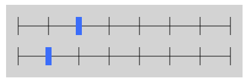
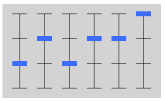
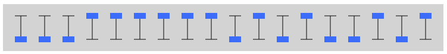

Majava esittää merkin2 merkkiä3 merkkiä liukukytkinten avulla.
Aseta liukukytkimet sellaisiin asentoihin, että tulos tulee identtiseksi tavoitteen kanssa.
Tehtävässä piti ensin ymmärtää, miten kytkinten asennot vaikuttavat annettujen 64 merkin päällä liikkuvan (ja valitun merkin määrittävän) kursorin sijaintiin.
Tässä versiossa voimme huomata, että kukin ylemmän kytkimen siirtoaskel siirtää kursoria 8 paikkaa ja kukin alemman kytkimen siirtoaskel 1 paikan.
Siirretään ensin ylempi kytkin niin pitkälle kuin mahdollista siirtämättä kursoria vielä tavoitemerkin ohi. Tämän jälkeen siirrämme alemman kytkimen niin pitkälle, että kursori siirtyy tavoitemerkin kohdalle. Tämä on aina mahdollista, koska ylemmän kytkimen siirtämisen jälkeen kursori on korkeintaan 7 paikan päässä tavoitemerkistä ja alempaa liukukytkintä on mahdollista siirtää 0-7 askelta.
Tässä versiossa voimme huomata, että kuusi kytkintä muodostavat kaksi samalla tavalla käyttäytyvää kolmen kytkimen ryhmää (toisessa ensimmäiset kolme ja toisessa jälkimmäiset kolme kytkintä). Kummassakin ryhmässä kukin ryhmän ensimmäisen kytkimen siirtoaskel siirtää kursoria 16 paikkaa, kukin ryhmän toisen kytkimen siirtoaskel 4 paikkaa, ja kukin ryhmän kolmannen kytkimen siirtoaskel 1 paikan.
Siirretään ensin ensimmäinen kytkin niin pitkälle kuin mahdollista siirtämättä kursoria vielä ensimmäisen tavoitemerkin ohi, ja toistetaan sama toisella ja kolmannella kytkimellä. Näistä viimeistään kolmannen kytkimen siirto asettaa kursorin ensimmäisen tavoitemerkin kohdalle: Kutakin kytkintä voi siirtää 0-3 askelta. Ensimmäisen kytkimen siirtämisen jälkeen kursori on korkeintaan 15 paikan päässä tavoitemerkistä, ja toisen kytkimen siirtämisen jälkeen korkeintaan 15-3×4 = 3 paikan päässä.
Kun kursori on saatu ensimmäisen tavoitemerkin kohdalle, toistamme edelliset askeleet mutta tarkastellen toista tavoitemerkkiä ja käyttäen neljättä, viidettä ja kuudetta kytkintä.
Tässä versiossa voimme huomata, että 18 kytkintä muodostavat kolme samalla tavalla käyttäytyvää kuuden kytkimen ryhmää (ensimmäisessä ensimmäiset 6, toisessa seuraavat 6 ja kolmannessa viimeiset 6 kytkintä). Kussakin ryhmässä ensimmäisen kytkimen siirtoaskel siirtää kursoria 32 paikkaa, toisen kytkimen 16 paikkaa, kolmannen kytkimen 8 paikkaa, neljännen kytkimen 4 paikkaa, viidennen kytkimen 2 paikkaa ja kuudennen kytkimen 1 paikan.
Siirretään ensin ensimmäinen kytkin niin pitkälle kuin mahdollista siirtämättä kursoria vielä ensimmäisen tavoitemerkin ohi, ja toistetaan sama toisella, kolmannella, neljännellä, viidennella ja kuudennella kytkimellä. Näistä viimeistään kuudennen kytkimen siirto asettaa kursorin ensimmäisen tavoitemerkin kohdalle: Kutakin kytkintä voi siirtää 0-1 askelta. Ensimmäisen kytkimen siirtämisen jälkeen kursori on korkeintaan 31 paikan päässä tavoitemerkistä, toisen jälkeen korkeintaan 31-16 = 15, kolmannen jälkeen korkeintaan 15-8 = 7, neljännen jälkeen korkeintaan 7-4 = 3 ja viidennen jälkeen korkeintaan 3-2 = 1 paikan päässä tavoitemerkistä.
Kun kursori on saatu ensimmäisen tavoitemerkin kohdalle, toistamme edelliset askeleet ensin tarkastellen toista tavoitemerkkiä ja käyttäen seuraavia kuutta kytkintä, ja lopuksi tarkastellen kolmatta tavoitemerkkiä ja käyttäen viimeisiä kuutta kytkintä.
Ratkaisua vastaavat kytkinten asennot on esitetty alla:
  Tehtävä havainnollistaa tiedon esittämistä erilaisia kantalukuja käyttäen. Kukin kytkin vastasi yhtä lukuesityksen numeroa. Lisäksi annetut merkit sekä tapa, kuinka kytkinten esittämä luku kuvautui tietyksi merkiksi niiden joukossa, vastaa tietokoneiden merkistöä.
Kahden tähden versiossa oli kyseessä 8-kantaesitys: kytkimillä oli 8 eri asentoa, jotka vastasivat alusta loppuun numeroita 0-7. Kahdella kytkimellä pystyi esittämään kaikki kaksinumeroisen 8-kantaisen luvun eri arvot väliltä 0×8 + 0×1 = 0 ja 7×8 + 7×1 = 63.
Kolmen tähden versiossa oli kyseessä 4-kantaesitys: kytkimillä oli 4 eri asentoa, jotka vastasivat alusta loppuun numeroita 0-3. Kolmella kytkimellä pystyi esittämään kaikki kolmenumeroisen 4-kantaisen luvun eri arvot väliltä 0×16 + 0×4 + 0×1 = 0 ja 3×16 + 3×4 + 3×1 = 63.
Neljän tähden versiossa oli kyseessä 2-kantaesitys: kytkimillä oli 2 eri asentoa, jotka vastasivat alusta loppuun numeroita 0-1. Kuudella kytkimellä pystyi esittämään kaikki kuusinumeroisen 2-kantaisen luvun eri arvot väliltä 0×32 + 0×16 + 0×8 + 0×4 + 0×2 + 0×1 = 0 ja 1×32 + 1×16 + 1×8 + 1×4 + 1×2 + 1×1 = 63.
Kursori liikkui eteenpäin kytkinten esittämää lukua vastaavan määrän paikkoja eteenpäin. Koska annetussa merkistössä oli kaikkiaan 64 merkkiä, riitti edellä kuvattu kytkinten esittämän luvun yläraja 63 siirtämään kursorin minkä tahansa annetun merkistön merkin kohdalle (viimeinen merkki on 63 paikan päässä ensimmäisestä).
Digitaaliset tietokoneet tallettavat kaiken tiedon pohjimmiltaan 2-kantaisessa muodossa (ns. binäärimuodossa). Esimerkiksi kukin erilainen kirjain esitetään tietokoneen muistissa lukuarvona, ja vastaavuus lukuarvon ja kirjaimen välillä voidaan määrittää jossain määrin vastaavan periaatteen mukaan kuinka tässä tehtävässä kytkinten esittämä luku vastasi tiettyä annetun merkistön merkkiä.
Katso lisää esim. https://fi.wikipedia.org/wiki/Kantalukujärjestelmä, https://fi.wikipedia.org/wiki/Binäärijärjestelmä ja https://fi.wikipedia.org/wiki/Merkistö.